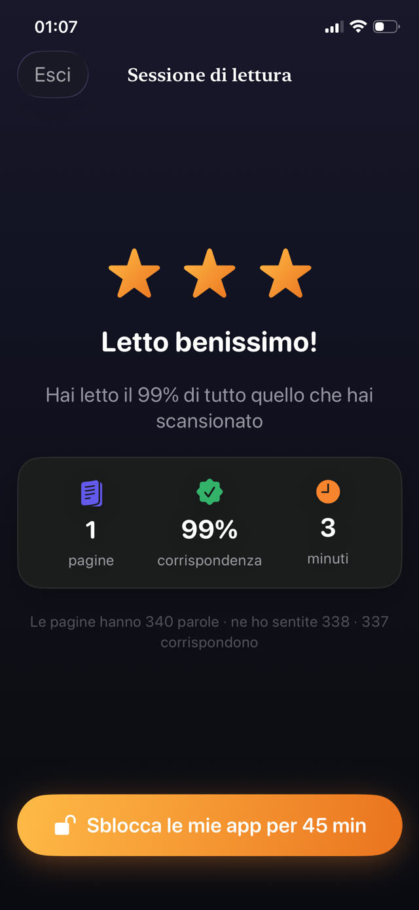

Le cause comuni sono quattro. Richiedono risposte diverse, e sbagliare la diagnosi è il motivo per cui tanto incoraggiamento in buona fede non porta a niente.


1. È troppo difficile
La causa più comune e la meno probabile da dire ad alta voce, perché ammetterlo sembra ammettere di essere stupidi. Se leggere costa così tanta fatica che la storia non arriva mai, ovvio che sia noioso: per quel bambino non c'è nessuna storia, solo lavoro.
Segnali: evitare in particolare la lettura ad alta voce, seguire con il dito ben oltre l'età prevista, indovinare le parole dalle prime lettere, stanchezza dopo un paio di minuti.
Cosa aiuta: abbassare la difficoltà di uno o due livelli, anche se sembra tornare indietro. La fluidità si costruisce su testi che il bambino riesce a gestire quasi del tutto. Sessioni brevi quotidiane ad alta voce la ricostruiscono più in fretta di lunghe sessioni silenziose.
2. Non hanno voce in capitolo su cosa leggono
Un libro assegnato da un adulto è un compito. Un libro scelto dal bambino è suo. La differenza nella disponibilità è enorme e non costa niente concederla.
Cosa aiuta: allargare ciò che conta. Fumetti, graphic novel, saggistica su un'unica ossessione ristretta, libri di barzellette, guide di videogiochi. L'esercizio di decodifica è identico, e l'interesse è l'unico carburante disponibile.
3. Non c'è un momento in cui leggere è la cosa ovvia
La lettura raramente vince una gara aperta contro uno schermo alle otto di sera. Non perché il bambino preferisca gli schermi in qualche modo profondo, ma perché lo schermo non richiede nessuna decisione.
Cosa aiuta: una fascia fissa, sempre alla stessa ora, abbastanza breve da essere indiscutibile. Dieci minuti prima di spegnere la luce, o subito dopo cena. Proteggere la fascia conta più della sua durata.
4. La lettura non ha uno scopo che riescano a sentire
Gli adulti leggono per piacere, ma il piacere si apre solo con la fluidità. Prima di quel punto un bambino ha bisogno di una ragione che esista oggi, non di una promessa di andare meglio a scuola più avanti.
Cosa aiuta: una conseguenza visibile e immediata. Dieci minuti di lettura sbloccano il gioco. Una serie che non deve spezzarsi. Una medaglia a sette giorni. Non è corruzione, è un ponte, e smette di contare appena la lettura stessa diventa gratificante.
Quando potrebbe essere più di semplice riluttanza
Se un bambino inverte le lettere con costanza ben oltre i sette anni, non riesce a comporre in modo affidabile semplici parole sconosciute, ha difficoltà con le rime, o legge una parola correttamente in una riga e non in quella dopo, vale la pena parlarne con l'insegnante e chiedere uno screening per la dislessia.
Riluttanza e difficoltà da fuori sembrano identiche, e la differenza conta. Questo articolo non sostituisce quella valutazione.
Rendere lo scopo immediato
Guardian Reader punta dritto alle cause tre e quattro. Crea la fascia fissa, perché la lettura deve avvenire prima che le app si aprano, e rende lo scopo immediato, perché il tempo di schermo arriva nel momento in cui la lettura è finita.
Poiché l'app adatta la soglia all'età che selezioni, un lettore in difficoltà non viene misurato con il metro di uno fluente. E l'obiettivo giornaliero si può impostare su una sola pagina, che per un lettore riluttante è esattamente il punto da cui partire.
La lettura sblocca lo schermo.
Gratis · Nessun account, nessun tracciamento
Scarica Guardian Reader per iPhone